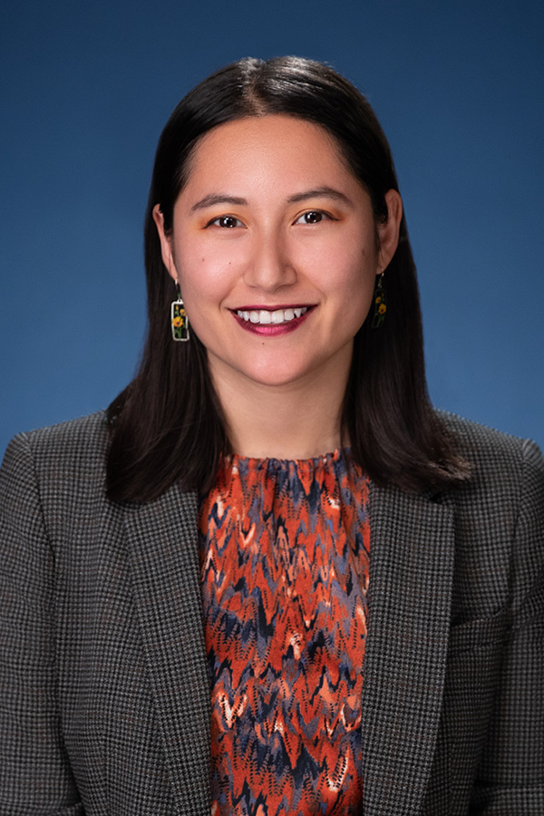

Cassidy Childs is a research associate for International Climate Policy at the Center for American Progress. Prior to joining American Progress, Cassidy was an environmental justice graduate intern at the White House Council on Environmental Quality, working on the Justice40 Initiative. She graduated from Columbia University's School of International and Public Affairs with a Master in Public Administration in environmental science and policy, and earned bachelor's degrees in political science and society and environment from UC Berkeley. Cassidy is deeply passionate about bringing equity and sustainability to environmental and climate issues.
Learn more about Cassidy's STEM journey through her conversation with our Education and Research Fellow, Swastika Issar:
Let's go back to the beginning — could you paint a picture of your childhood?
I grew up in Northern California, in a town called Santa Rosa. I have one twin sister who is now an environmental engineer. My mother is from Pampanga, a province in the Central Luzon region of the Philippines. She emigrated to California when she was younger, while the rest of her family — her siblings and parents — are all in the Philippines. So, we would visit every year or so to catch up with my cousins and my Titas and Titos.
My mom works as a registered nurse. On a typical day, she would drop us off for school. We'd always do some after-school activities and our mom would pick us up afterwards. Those activities were really great for our education. We had robotics clubs and science fairs — I think that's where my love of science started.
Were there any subjects you particularly loved or hated at school?
I loved it all. I know that sounds really nerdy! But I think the reason I chose an interdisciplinary field like climate change policy was because I loved English and writing. My day-to-day has a lot of writing in it. At the same time, I was really interested in STEM — physics and math in particular. That's how I got into climate policy and environmental science. So it feels like two different parts of my brain are always working in tandem.
Was there one person, or a group of people, who influenced your choice of career?
I can't say I can pinpoint just one. I'm really thankful for the community of teachers that helped me along the way. I had a seventh grade English teacher who taught me that I could really write. My eleventh and twelfth grade physics teacher encouraged my love of science and math. My history teacher in twelfth grade really got me into political activism and caring about social issues, such as climate change and climate justice. A thousand pushes in the right direction from many different people helped me in my journey. I think it's crucial to have those teachers and those mentors at different stages of our life, all encouraging us in the path we envision and daring us to dream.
Did you pursue your interest in combining STEM and activism right away at university?
I started as a political science major at Berkeley, which was a lot more politics and very little science. But we had a wildfire in my hometown that year and that inspired me to think about climate change. I was also in an intro to climate change class at the same time and everything we were studying felt very real and personal for me. I felt like it was a good bridge for me to get into political activism and advocacy. I had always loved science, so it was a good return to STEM for me to learn about how our social, political, and economic world interfaced with our changing environment. That was the big moment where I switched to a double major in political science and society & environment.
What do you love most about your work at the Center for American Progress?
I get to work on climate policy at an international level, which brings together my love of science, writing, and advocacy. I get to research what other countries are doing on climate change, what the U.S. is doing internationally, and think about how we build global partnerships to address this challenge. The fact that science is at the heart of it — and that I can draw on my Filipino heritage and my lived experience of being close to a country that is profoundly affected by climate change — makes it feel deeply personal and important.
What advice would you give to young Filipino and Filipino-American students interested in STEM?
Find your community. I was lucky to have Filipino friends growing up, and that sense of community is so important when you're navigating spaces where you might not always see people who look like you. And don't feel like you have to choose between your Filipino identity and your scientific identity — they can be deeply complementary. The Philippines is incredibly vulnerable to climate change, to sea level rise, to extreme weather events. There is so much important work to be done that draws on both scientific expertise and cultural connection.
More from the Filipinas in STEM series:
- Cynthia Garcia-Eidell — Satellite Science and the Ocean
- Faye Romero — Evolutionary Biologist
- Janneli Lea A. Soria — Geologist and Science Educator
- Reinabelle Reyes — Data Science, Physics & Community
- Iris Bea Ramiro — Cone Snails, Copenhagen & Beyond
- Ariane Peralta — Microbiologist, East Carolina University
- Hyacinth Suarez — Marine Biologist, Bohol